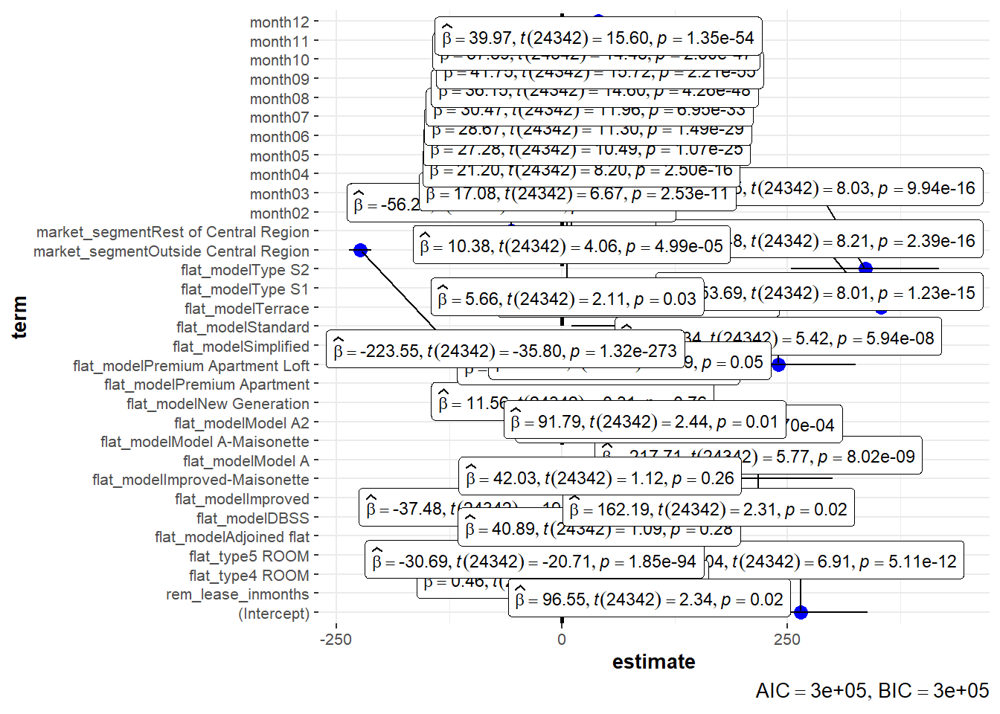
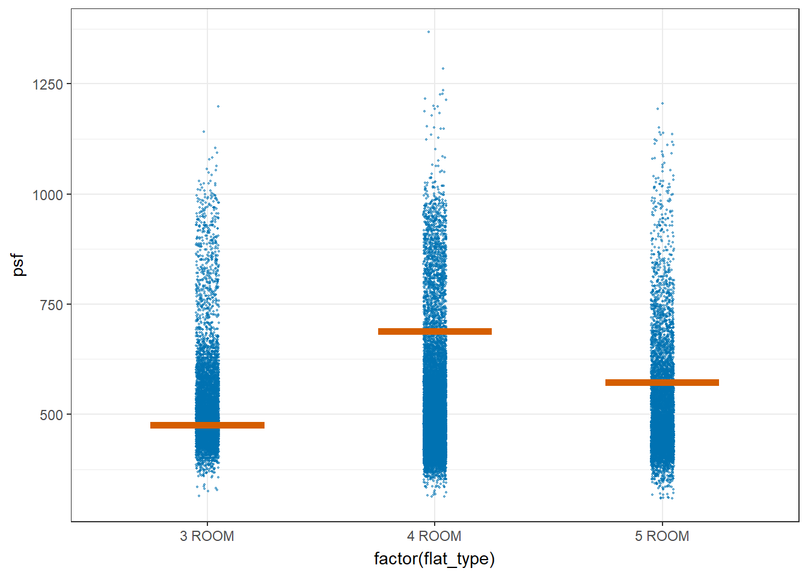

Code
pacman::p_load(ggstatsplot, tidyverse, readxl, performance, parameters, see, plotly, crosstalk, DT, ggdist, gganimate, gifski, gapminder)
library(plotly)In this take-home exercise, I will uncover the salient patterns of the resale prices of public housing property by residential towns in Singapore by using appropriate analytical visualisation techniques learned in Lesson 4: Fundamentals of Visual Analytics.
For the purpose of this study, the focus will be on 3-ROOM, 4-ROOM and 5-ROOM types. The study period will be on 2022.
Resale flat princes based on registration date from Jan-2017 onwards from Data.gov.sg will be used to prepare the analytical visualisation and processed by RStudio tidyverse family of packages and visualized by ggplot2 and its extensions as well as other R packages.
The code chunk below uses p_load() of pacman package to check if the various packages used for the visual analysis are installed in the computer. If they are, then they will be launched into R.
pacman::p_load(ggstatsplot, tidyverse, readxl, performance, parameters, see, plotly, crosstalk, DT, ggdist, gganimate, gifski, gapminder)
library(plotly)
The code chunk below imports resale-flat-prices-based-on-registration-date-from-jan-2017-onwards.csv from the data folder into R by using read_csv() of readr and save it as an tibble data frame called resale_data.
resale_data <- read_csv("data/resale-flat-prices-based-on-registration-date-from-jan-2017-onwards.csv")
head(resale_data)# A tibble: 6 × 11
month town flat_…¹ block stree…² store…³ floor…⁴ flat_…⁵ lease…⁶ remai…⁷
<chr> <chr> <chr> <chr> <chr> <chr> <dbl> <chr> <dbl> <chr>
1 2017-01 ANG MO … 2 ROOM 406 ANG MO… 10 TO … 44 Improv… 1979 61 yea…
2 2017-01 ANG MO … 3 ROOM 108 ANG MO… 01 TO … 67 New Ge… 1978 60 yea…
3 2017-01 ANG MO … 3 ROOM 602 ANG MO… 01 TO … 67 New Ge… 1980 62 yea…
4 2017-01 ANG MO … 3 ROOM 465 ANG MO… 04 TO … 68 New Ge… 1980 62 yea…
5 2017-01 ANG MO … 3 ROOM 601 ANG MO… 01 TO … 67 New Ge… 1980 62 yea…
6 2017-01 ANG MO … 3 ROOM 150 ANG MO… 01 TO … 68 New Ge… 1981 63 yea…
# … with 1 more variable: resale_price <dbl>, and abbreviated variable names
# ¹flat_type, ²street_name, ³storey_range, ⁴floor_area_sqm, ⁵flat_model,
# ⁶lease_commence_date, ⁷remaining_leaseThe code chunk below filters for 3, 4 and 5 room flat types and for year 2022.
resale_data_filter <- resale_data %>%
separate(month, into = c("year", "month"), sep = "-") %>%
filter(year == "2022") %>%
filter(flat_type %in% c("3 ROOM", "4 ROOM", "5 ROOM"))
head(resale_data_filter)# A tibble: 6 × 12
year month town flat_type block stree…¹ store…² floor…³ flat_…⁴ lease…⁵
<chr> <chr> <chr> <chr> <chr> <chr> <chr> <dbl> <chr> <dbl>
1 2022 01 ANG MO KIO 3 ROOM 320 ANG MO… 07 TO … 73 New Ge… 1977
2 2022 01 ANG MO KIO 3 ROOM 225 ANG MO… 07 TO … 67 New Ge… 1978
3 2022 01 ANG MO KIO 3 ROOM 331 ANG MO… 07 TO … 68 New Ge… 1981
4 2022 01 ANG MO KIO 3 ROOM 534 ANG MO… 07 TO … 82 New Ge… 1980
5 2022 01 ANG MO KIO 3 ROOM 578 ANG MO… 04 TO … 67 New Ge… 1980
6 2022 01 ANG MO KIO 3 ROOM 452 ANG MO… 01 TO … 83 New Ge… 1979
# … with 2 more variables: remaining_lease <chr>, resale_price <dbl>, and
# abbreviated variable names ¹street_name, ²storey_range, ³floor_area_sqm,
# ⁴flat_model, ⁵lease_commence_dateThe code chunk below converts the remaining lease from months and years (in the character datatype) to months (in the numeric datatype).
resale_data_lease1 <- resale_data_filter %>%
separate(remaining_lease, into = c("years", "months"), sep = " years ") %>%
separate(years, into = c("years", "test1"), sep = " ") %>%
separate(months, into = c("months", "test2"), sep = " ") %>%
transform(years = as.numeric(years)) %>%
transform(months = as.numeric(months)) %>%
replace(is.na(.), 0) %>%
transform(rem_lease_inmonths = months + (years * 12))
resale_data_lease <- subset(resale_data_lease1, select = -c(test1, test2))
head(resale_data_lease) year month town flat_type block street_name storey_range
1 2022 01 ANG MO KIO 3 ROOM 320 ANG MO KIO AVE 1 07 TO 09
2 2022 01 ANG MO KIO 3 ROOM 225 ANG MO KIO AVE 1 07 TO 09
3 2022 01 ANG MO KIO 3 ROOM 331 ANG MO KIO AVE 1 07 TO 09
4 2022 01 ANG MO KIO 3 ROOM 534 ANG MO KIO AVE 10 07 TO 09
5 2022 01 ANG MO KIO 3 ROOM 578 ANG MO KIO AVE 10 04 TO 06
6 2022 01 ANG MO KIO 3 ROOM 452 ANG MO KIO AVE 10 01 TO 03
floor_area_sqm flat_model lease_commence_date years months resale_price
1 73 New Generation 1977 54 5 358000
2 67 New Generation 1978 55 1 355000
3 68 New Generation 1981 58 0 338000
4 82 New Generation 1980 57 2 420000
5 67 New Generation 1980 57 1 328000
6 83 New Generation 1979 56 7 360000
rem_lease_inmonths
1 653
2 661
3 696
4 686
5 685
6 679
The code chunk below changes the storey range into a factor variable such that it’s ordered.
storey_order <- c("01 TO 03", "04 TO 06", "07 TO 09", "10 TO 12", "13 TO 15", "16 TO 18", "19 TO 21", "22 TO 24", "25 TO 27", "28 TO 30", "31 TO 33", "34 TO 36", "37 TO 39", "40 TO 42", "43 TO 45", "46 TO 48", "49 TO 51")
resale_data_order <- resale_data_lease %>%
mutate(`storey_range` = factor(storey_range, levels = storey_order))
head(resale_data_order) year month town flat_type block street_name storey_range
1 2022 01 ANG MO KIO 3 ROOM 320 ANG MO KIO AVE 1 07 TO 09
2 2022 01 ANG MO KIO 3 ROOM 225 ANG MO KIO AVE 1 07 TO 09
3 2022 01 ANG MO KIO 3 ROOM 331 ANG MO KIO AVE 1 07 TO 09
4 2022 01 ANG MO KIO 3 ROOM 534 ANG MO KIO AVE 10 07 TO 09
5 2022 01 ANG MO KIO 3 ROOM 578 ANG MO KIO AVE 10 04 TO 06
6 2022 01 ANG MO KIO 3 ROOM 452 ANG MO KIO AVE 10 01 TO 03
floor_area_sqm flat_model lease_commence_date years months resale_price
1 73 New Generation 1977 54 5 358000
2 67 New Generation 1978 55 1 355000
3 68 New Generation 1981 58 0 338000
4 82 New Generation 1980 57 2 420000
5 67 New Generation 1980 57 1 328000
6 83 New Generation 1979 56 7 360000
rem_lease_inmonths
1 653
2 661
3 696
4 686
5 685
6 679The code chunk below creates a new variable price per square feet (psf), which is commonly used to compare the price of houses of different sizes. I did this by dividing total resale price by floor area (converted from meters to feet by multiplying by 10.7639).
resale_data_psf <- resale_data_order %>%
mutate(`psf` = as.integer(round(resale_price/(floor_area_sqm * 10.7639), 2)))
head(resale_data_psf) year month town flat_type block street_name storey_range
1 2022 01 ANG MO KIO 3 ROOM 320 ANG MO KIO AVE 1 07 TO 09
2 2022 01 ANG MO KIO 3 ROOM 225 ANG MO KIO AVE 1 07 TO 09
3 2022 01 ANG MO KIO 3 ROOM 331 ANG MO KIO AVE 1 07 TO 09
4 2022 01 ANG MO KIO 3 ROOM 534 ANG MO KIO AVE 10 07 TO 09
5 2022 01 ANG MO KIO 3 ROOM 578 ANG MO KIO AVE 10 04 TO 06
6 2022 01 ANG MO KIO 3 ROOM 452 ANG MO KIO AVE 10 01 TO 03
floor_area_sqm flat_model lease_commence_date years months resale_price
1 73 New Generation 1977 54 5 358000
2 67 New Generation 1978 55 1 355000
3 68 New Generation 1981 58 0 338000
4 82 New Generation 1980 57 2 420000
5 67 New Generation 1980 57 1 328000
6 83 New Generation 1979 56 7 360000
rem_lease_inmonths psf
1 653 455
2 661 492
3 696 461
4 686 475
5 685 454
6 679 402The code chunks below visualizes the town distribution.
ggplot(data = resale_data_psf,
aes(y = town)) +
geom_bar() +
theme_bw() +
ggtitle("Town distribution")The code chunk below recodes the town variable into 3 market segments as defined by the Urban Redevelopment Authority (URA); Core Central Region (CCR), Rest of Central Region (RCR) and Outside Central Region (OCR).
CCR <- c("CENTRAL AREA", "BUKIT TIMAH")
RCR <- c("TOA PAYOH", "QUEENSTOWN", "MARINE PARADE", "KALLANG/WHAMPOA", "GEYLANG","BISHAN")
OCR <- c("YISHUN", "WOODLANDS", "TAMPINES", "SERANGOON", "SENGKANG", "SEMBAWANG", "PUNGGOL", "PASIR RIS", "JURONG WEST", "JURONG EAST", "HOUGANG", "CLEMENTI", "CHOA CHU KANG", "BUKIT PANJANG", "BUKIT MERAH", "BUKIT BATOK", "BEDOK", "ANG MO KIO")
resale_data_final <- resale_data_psf %>%
mutate(market_segment = recode(town,
"CENTRAL AREA" = "Core Central Region",
"BUKIT TIMAH" = "Core Central Region",
"TOA PAYOH" = "Rest of Central Region",
"QUEENSTOWN" = "Rest of Central Region",
"MARINE PARADE" = "Rest of Central Region",
"KALLANG/WHAMPOA" = "Rest of Central Region",
"GEYLANG" = "Rest of Central Region",
"BISHAN" = "Rest of Central Region",
"YISHUN" = "Outside Central Region",
"WOODLANDS" = "Outside Central Region",
"TAMPINES" = "Outside Central Region",
"SERANGOON" = "Outside Central Region",
"SENGKANG" = "Outside Central Region",
"SEMBAWANG" = "Outside Central Region",
"PUNGGOL" = "Outside Central Region",
"PASIR RIS" = "Outside Central Region",
"JURONG WEST" = "Outside Central Region",
"JURONG EAST" = "Outside Central Region",
"HOUGANG" = "Outside Central Region",
"CLEMENTI" = "Outside Central Region",
"CHOA CHU KANG" = "Outside Central Region",
"BUKIT PANJANG" = "Outside Central Region",
"BUKIT MERAH" = "Outside Central Region",
"BUKIT BATOK" = "Outside Central Region",
"BEDOK" = "Outside Central Region",
"ANG MO KIO" = "Outside Central Region"))
head(resale_data_final) year month town flat_type block street_name storey_range
1 2022 01 ANG MO KIO 3 ROOM 320 ANG MO KIO AVE 1 07 TO 09
2 2022 01 ANG MO KIO 3 ROOM 225 ANG MO KIO AVE 1 07 TO 09
3 2022 01 ANG MO KIO 3 ROOM 331 ANG MO KIO AVE 1 07 TO 09
4 2022 01 ANG MO KIO 3 ROOM 534 ANG MO KIO AVE 10 07 TO 09
5 2022 01 ANG MO KIO 3 ROOM 578 ANG MO KIO AVE 10 04 TO 06
6 2022 01 ANG MO KIO 3 ROOM 452 ANG MO KIO AVE 10 01 TO 03
floor_area_sqm flat_model lease_commence_date years months resale_price
1 73 New Generation 1977 54 5 358000
2 67 New Generation 1978 55 1 355000
3 68 New Generation 1981 58 0 338000
4 82 New Generation 1980 57 2 420000
5 67 New Generation 1980 57 1 328000
6 83 New Generation 1979 56 7 360000
rem_lease_inmonths psf market_segment
1 653 455 Outside Central Region
2 661 492 Outside Central Region
3 696 461 Outside Central Region
4 686 475 Outside Central Region
5 685 454 Outside Central Region
6 679 402 Outside Central RegionThe code chunks below visualizes the storey range distribution.
ggplot(data = resale_data_psf,
aes(y = storey_range)) +
geom_bar() +
theme_bw() +
ggtitle("Storey range distribution")I initially thought of re-coding storey range into ‘low’, ‘middle’ and ‘high’ floor but found that this may not allow a fair comparison as different buildings have different number of storeys. It is difficult to have a standardized definition of ‘low’, ‘middle’ and ‘high’ floor. For some buildings, 10th storey may be considered a high floor, but for other buildings, 10th storey may be the middle floor.
skimr::skim(resale_data_final)| Name | resale_data_final |
| Number of rows | 24374 |
| Number of columns | 16 |
| _______________________ | |
| Column type frequency: | |
| character | 8 |
| factor | 1 |
| numeric | 7 |
| ________________________ | |
| Group variables | None |
Variable type: character
| skim_variable | n_missing | complete_rate | min | max | empty | n_unique | whitespace |
|---|---|---|---|---|---|---|---|
| year | 0 | 1 | 4 | 4 | 0 | 1 | 0 |
| month | 0 | 1 | 2 | 2 | 0 | 12 | 0 |
| town | 0 | 1 | 5 | 15 | 0 | 26 | 0 |
| flat_type | 0 | 1 | 6 | 6 | 0 | 3 | 0 |
| block | 0 | 1 | 1 | 4 | 0 | 2457 | 0 |
| street_name | 0 | 1 | 7 | 20 | 0 | 552 | 0 |
| flat_model | 0 | 1 | 4 | 22 | 0 | 16 | 0 |
| market_segment | 0 | 1 | 19 | 22 | 0 | 3 | 0 |
Variable type: factor
| skim_variable | n_missing | complete_rate | ordered | n_unique | top_counts |
|---|---|---|---|---|---|
| storey_range | 0 | 1 | FALSE | 17 | 04 : 5453, 07 : 5110, 10 : 4499, 01 : 4118 |
Variable type: numeric
| skim_variable | n_missing | complete_rate | mean | sd | p0 | p25 | p50 | p75 | p100 | hist |
|---|---|---|---|---|---|---|---|---|---|---|
| floor_area_sqm | 0 | 1 | 94.07 | 19.32 | 51 | 81 | 93 | 110 | 159 | ▅▇▆▃▁ |
| lease_commence_date | 0 | 1 | 1997.46 | 14.98 | 1967 | 1985 | 1998 | 2014 | 2019 | ▂▆▅▃▇ |
| years | 0 | 1 | 74.06 | 15.02 | 43 | 61 | 74 | 91 | 96 | ▂▇▃▅▇ |
| months | 0 | 1 | 5.56 | 3.49 | 0 | 3 | 6 | 9 | 11 | ▇▅▅▅▇ |
| resale_price | 0 | 1 | 536391.17 | 157993.72 | 200000 | 428000 | 515000 | 610000 | 1418000 | ▅▇▂▁▁ |
| rem_lease_inmonths | 0 | 1 | 894.28 | 180.23 | 517 | 741 | 895 | 1097 | 1157 | ▂▇▅▅▇ |
| psf | 0 | 1 | 532.40 | 126.65 | 309 | 449 | 498 | 573 | 1368 | ▇▅▁▁▁ |
In this section, I attempt to understand the difference in means of prices between different market segments and flat type. To do so, I use the Oneway ANOVA tests, which will show the comparison between means. After which, I attempt to understand the correlation of remaining lease with price, first by using significant test of correlation followed by a multi-linear regression where I include control variables.
Price By Market Segment
In the code chunk below, ggbetweenstats() is used to build a visual for One-way ANOVA test on price per square feet (psf) by market segment. The purpose is to test if indeed the price per square feet differs significantly across the 3 market segments. The null hypothesis is that all population means are equal (i.e. no variation in means across the 3 market segments ) while the alternative hypothesis is that at least 1 population mean is different.
ggbetweenstats(
data = resale_data_final,
x = market_segment,
y = psf,
type = "p",
mean.ci = TRUE,
pairwise.comparisons = TRUE,
pairwise.display = "s",
p.adjust.method = "fdr",
messages = FALSE
)Analysis:
From the visualization, we can see that the p-value is extremely small (<0.01). This means that we reject the null hypothesis and say that there is evidence that not all the means are the same and at least 1 mean is different across the 3 market segments, statistically significant at 1% level.
Price By Flat Type
In the code chunk below, ggbetweenstats() is used to build a visual for One-way ANOVA test on price per square feet (psf) by flat type (3, 4 & 5 Room). The purpose is to test if indeed the psf differs significantly across the flat types. The null hypothesis is that all population means are equal (i.e. no variation in means across the 3 market segments) while the alternative hypothesis is that at least 1 population mean is different.
ggbetweenstats(
data = resale_data_final,
x = flat_type,
y = psf,
type = "p",
mean.ci = TRUE,
pairwise.comparisons = TRUE,
pairwise.display = "s",
p.adjust.method = "fdr",
messages = FALSE
)Analysis:
From the visualization, we can see that the p-value is extremely small (<0.01). This means that we reject the null hypothesis and say that there is evidence that not all the means are the same and at least 1 mean is different across the 3 flat types, statistically significant at 1% level.
We can also see that 4 ROOM flat type has highest mean psf, followed by 3 ROOM then 5 ROOM. It is interesting that 4 ROOM mean psf is actually higher than that of 3 ROOM since we usually expect that the bigger the flat, the lower the psf.
In the code chunks below, ggscatterstats() is used to build a visual for Significant Test of Correlation between remaining lease in months and resale price per sf (psf).
ggscatterstats(
data = resale_data_final,
x = psf,
y = rem_lease_inmonths,
marginal = FALSE,
)
ggscatterstats(
data = resale_data_final,
x = rem_lease_inmonths,
y = psf,
marginal = FALSE,
)Analysis:
There seems to be a statistically significant positive correlation between psf and remaining lease. The higher the remaining lease, the higher the price per square feet. To further support this, we want to include some control variables by having a multi-linear regression model including control variables such as flat type, flat model, market segment and month as shown below.
The code chunk below is used to calibrate a multiple linear regression model by using lm() of Base Stats of . The dependent/Y variable is psf while the independent/X variables are remaining lease, flat type, flat model, market segment and month.
model <- lm(psf ~ rem_lease_inmonths + flat_type + flat_model + market_segment + month, data = resale_data_final)
model
Call:
lm(formula = psf ~ rem_lease_inmonths + flat_type + flat_model +
market_segment + month, data = resale_data_final)
Coefficients:
(Intercept) rem_lease_inmonths
264.0395 0.4587
flat_type4 ROOM flat_type5 ROOM
-30.6890 -37.4823
flat_modelAdjoined flat flat_modelDBSS
96.5466 217.7092
flat_modelImproved flat_modelImproved-Maisonette
40.8898 162.1900
flat_modelModel A flat_modelModel A-Maisonette
42.0292 129.2770
flat_modelModel A2 flat_modelNew Generation
11.5564 91.7886
flat_modelPremium Apartment flat_modelPremium Apartment Loft
40.3449 239.3396
flat_modelSimplified flat_modelStandard
74.9831 84.1695
flat_modelTerrace flat_modelType S1
353.6917 329.4812
flat_modelType S2 market_segmentOutside Central Region
335.9461 -223.5458
market_segmentRest of Central Region month02
-56.2748 5.6644
month03 month04
10.3838 17.0764
month05 month06
21.1960 27.2774
month07 month08
28.6735 30.4727
month09 month10
36.1532 41.7470
month11 month12
37.6914 39.9656 ggcoefstats(model,
output = "plot")
check_collinearity(model)# Check for Multicollinearity
Low Correlation
Term VIF VIF 95% CI Increased SE Tolerance Tolerance 95% CI
rem_lease_inmonths 2.01 [1.97, 2.05] 1.42 0.50 [0.49, 0.51]
flat_type 2.75 [2.69, 2.81] 1.66 0.36 [0.36, 0.37]
month 1.01 [1.00, 1.04] 1.01 0.99 [0.97, 1.00]
flat_model 6.18 [6.04, 6.33] 2.49 0.16 [0.16, 0.17]
Moderate Correlation
Term VIF VIF 95% CI Increased SE Tolerance Tolerance 95% CI
market_segment 1.62 [1.59, 1.65] 1.27 0.62 [0.61, 0.63]check_c <- check_collinearity(model)
plot(check_c)check_n <- check_normality(model)
plot(check_n)check_h <- check_heteroscedasticity(model)
plot(check_h)check_model(model)Analysis:
After controlling for several variables (i.e. holding them constant), we see that remaining lease still has a statistically significantly positive correlation with price per sf, similar to the findings we found in sub-section b above. In this regression model, we see that for every 1 month increase in remaining lease, psf increases by $0.46.
There doesn’t seem to be multi-collinearity as we can see that the VIFs are <10. The distribution also seems somewhat normal although heteroscedasticity may not hold true.
In this section, I attempt to visualize uncertainty using standard error of mean of price per sf by flat type. This will enable me to compare the uncertainty of the point estimate.
my_sum <- resale_data_final %>%
group_by(flat_type) %>%
summarise(
n=n(),
mean=mean(psf),
sd=sd(psf)
) %>%
mutate(se=sd/sqrt(n-1))knitr::kable(head(my_sum), format = 'html')| flat_type | n | mean | sd | se |
|---|---|---|---|---|
| 3 ROOM | 6346 | 531.9578 | 114.2673 | 1.434518 |
| 4 ROOM | 11312 | 540.8934 | 136.1932 | 1.280575 |
| 5 ROOM | 6716 | 518.5222 | 119.7026 | 1.460766 |
ggplot(my_sum) +
geom_errorbar(
aes(x=reorder(flat_type, -mean),
ymin=mean-se,
ymax=mean+se),
width=0.2,
colour="black",
alpha=0.9,
size=0.5) +
geom_point(aes
(x=flat_type,
y=mean),
stat="identity",
color="red",
size = 1.5,
alpha=1) +
ggtitle("Standard error of mean
psf by flat type")resale_data_final %>%
ggplot(aes(x = flat_type,
y = psf)) +
stat_pointinterval(
show.legend = FALSE) +
labs(
title = "Visualising confidence intervals of mean psf",
subtitle = "Mean Point + Multiple-interval plot")devtools::install_github("wilkelab/ungeviz")library(ungeviz)ggplot(data = resale_data_final,
(aes(x = factor(flat_type), y = psf))) +
geom_point(position = position_jitter(
height = 0.3, width = 0.05),
size = 0.4, color = "#0072B2", alpha = 1/2) +
geom_hpline(data = sampler(25, group = flat_type), height = 0.6, color = "#D55E00") +
theme_bw() +
# `.draw` is a generated column indicating the sample draw
transition_states(.draw, 1, 3)
Analysis:
It appears that the Standard Error seems to be very similar between the different flat types. The error bars are about the same height. This shows that the uncertainty of the means are very similar across the flat types and they can be compared.
The confidence intervals seems to overlap between the 3 flat types, which could mean that the mean psf may not be statistically significantly different from each other. However, from the one way ANOVA test in section 3.1, we saw that they are statistically significantly different.
For this assignment, I selected only several cuts of data for visualization. For example, I only conducted the One way Anova tests on psf by the 3 market segments and the 3 flat types. This is so that we can have results that are more scoped and interpret-able. For future work, I can conduct the tests on more more cuts of data.
It was also difficult to include all the variables I would like in the multi-linear regression. Most of them are categorical variables and the interpretation of their correlation coefficients is not useful for my objective of finding correlation between remaining lease and psf. The coefficients on categorical variables shows us the differential effect of that category compared to the omitted category. However, I included them simply as control variables to hold them constant. For future work, we may try to interpret these coefficients.